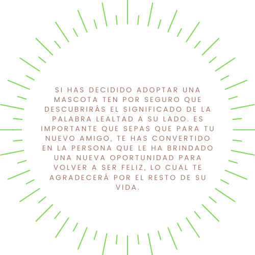

A lo largo de más de veinte años de funcionamiento, nos enorgullece haber encontrado hogar a 15.300 perros y a 2.298 gatos, incluyendo tanto a adultos como cachorros. El promedio de adopciones es de 50 perros y de 15 gatos por mes.
Todos los animales se entregan vacunados y desparasitados con certificado avalado por un veterinario y, si son adultos esterilizados. También se entregan con collar, chapita identificatoria y correa.
No pedimos ningún tipo de remuneración por cada animal que entregamos en adopción.